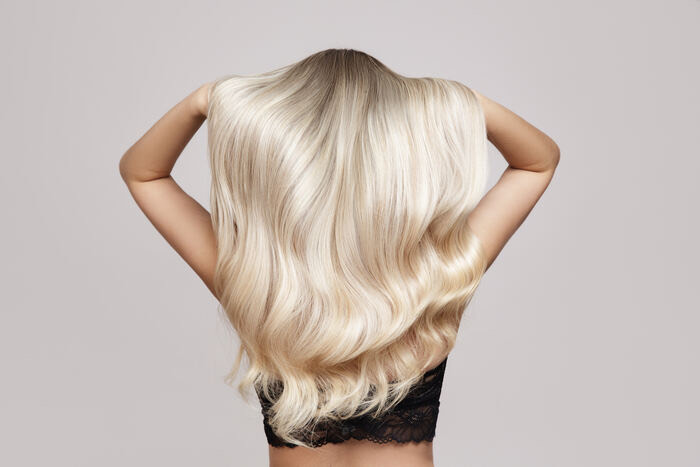
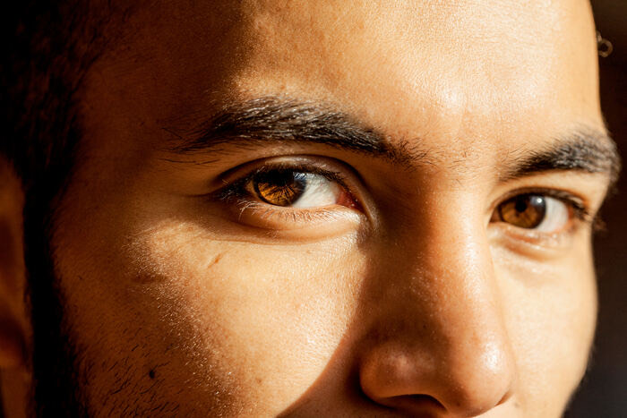
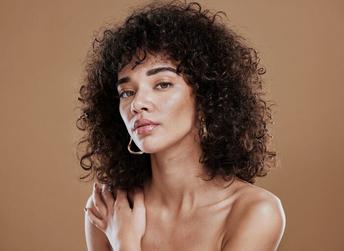
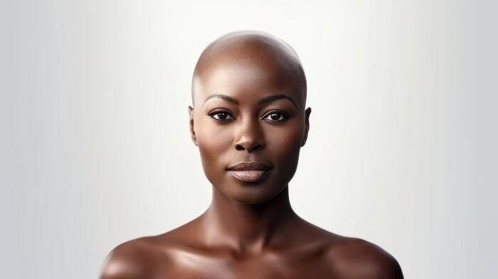
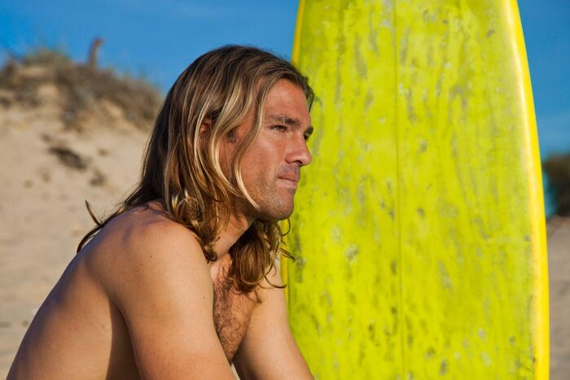
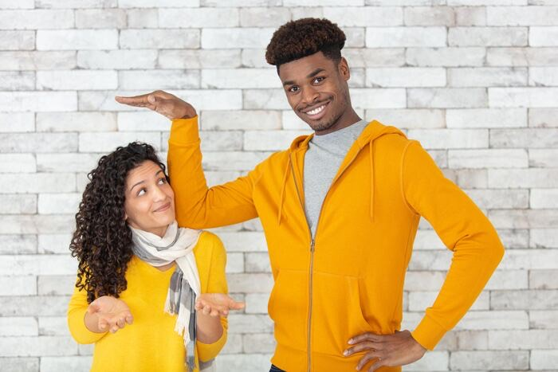

Language · A2
Describing people
Name
1What does Sarah say?
From the reading. Sarah is talking to Priya about her date.
"Well, he's tall with brown hair and green eyes. And he has a beard."
2What do the underlined words mean?
With a partner, guess the meaning from the sentence. Don't use a dictionary.
He's tall with brown hair and green eyes. And he has a beard.
hair color?eye color?face: what is it?
3Describing people
Match each phrase to a picture. Write the letter in the box.

A

B
C
D

E

F
curly hair
beard
bald
blonde hair
brown eyes
mustache
Blonde is used for women, blond for men.
4Check the meaning
Circle Yes or No.
- "He's bald." Does he have hair? YesNo
- "He has a beard." Is the hair on his face? YesNo
- "He has a beard." Is it on his head? YesNo
- "She has curly hair." Is her hair straight? YesNo
- "He has a mustache." Is it above his mouth? YesNo
- "She has brown eyes." Is brown the color of her eyes? YesNo
5Find the pattern
Look at the sentences. Then circle the right answer.
He's tall with brown hair and green eyes. He has a beard. He's bald. She has curly hair.
- has + + noun (brown hair, green eyes) adjectiveverbnoun
- is + (tall, bald) nounadjectiveverb + -ing
- Which order is right? hair brownbrown hair
- He has a beard, but he has green eyes, with no a. Why? eyes is pluraleyes is an adjective
- He's tall with brown hair. With means: and he hasand he is
6Listen and choose
Listen to your teacher, then circle.
- curly: where is the stress? CUR-lycur-LY
- bald: is the vowel long or short? long, like ballshort, like bad
- eyes: what is the last sound? /s//z/
- He has a beard. Which word is stressed most? hasbeard
- She has curly hair. Which words are stressed? curly, hairshe, has
7Two questions that sound the same
What does he look like?
His appearance: what you can see.
He's tall with brown hair.
What is he like?
His personality: what kind of person he is.
He's friendly and very funny.
Which question does each answer go with? Circle one.
- He's tall with short dark hair. look likeis like
- She's very friendly and quite shy. look likeis like
- He's funny and really kind. look likeis like
- She's got long blonde hair. look likeis like
- He wears glasses and has a beard. look likeis like
- She's hard-working and a bit serious. look likeis like
8Which order?
Circle the one that sounds right.
- She has … brown short hairshort brown hairhair short brown
- He has … long blond hairblond long hairhair long blond
- She has … green big eyeseyes big greenbig green eyes
- He has … curly gray hairgray curly hair
9More words
With a partner, write more words to describe appearance.
tallshortglassesfreckleswavy hairdimplesgray hairtattoo
10has, is or wears?
Circle the right word.
- She long dark hair. hasiswears
- He tall and slim. hasiswears
- My brother glasses. hasiswears
- She's blue eyes. isgotdoes
- My parents both short. ishasare
- He a mustache and a beard. iswearshas
11What do they look like?
Write one sentence for each person. Example: Brad has long blond hair.

Brad
Jessica
Matthew
Ravi
Angela

Amy and Paul
12Describe someone you know
Work with a partner. Describe a friend or someone in your family. Your partner draws them or guesses who it is.
Try to use: has / has got + hair, eyes, a beard · is + tall, short, bald · wears glasses
Then describe someone in this room without saying their name. Can your partner guess who it is?